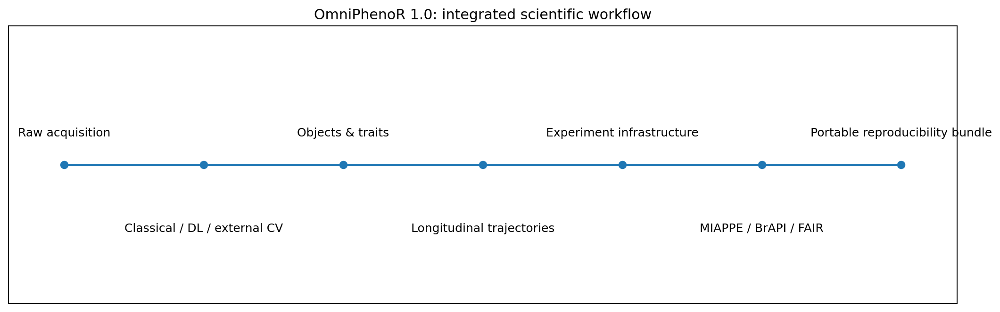

OmniPhenoR 1.0: Integrated End-to-End Phenotyping Workflow
Source:vignettes/v43-omniphenor-1.0-integrated-workflow.Rmd
v43-omniphenor-1.0-integrated-workflow.RmdPurpose
OmniPhenoR 1.0 consolidates the five development generations that preceded the stable interface. The package now spans classical image phenotyping, R-native deep learning, optional external computer-vision backends, longitudinal phenotyping, experiment-level data infrastructure, metadata interoperability, and reproducibility packaging.
The important idea is not that every experiment must use every layer. The stable 1.0 architecture allows an experiment to stop at the level that is scientifically appropriate while preserving compatible objects, identifiers, provenance, and documentation.

The five development generations now consolidated
0.1.0: classical digital phenotyping
The first generation established the R-first core:
- RGB and color indices;
- segmentation;
- morphometry;
- disease severity;
- first-order and advanced texture;
- quality control;
- spatial linkage;
- workflow and reporting infrastructure.
A minimal example remains:
img <- pheno_data("leaf_rgb")
idx <- pheno_rgb_indices(img, c("ExG", "GLI", "NGRDI"))
mask <- pheno_segment(img)
morph <- pheno_morphology(mask)
morph
#> # A tibble: 1 × 13
#> object_id area_px perimeter_px centroid_x centroid_y bbox_width_px
#> <int> <int> <int> <dbl> <dbl> <dbl>
#> 1 1 2872 264 64.5 48.5 92
#> # ℹ 7 more variables: bbox_height_px <dbl>, equivalent_diameter_px <dbl>,
#> # circularity <dbl>, aspect_ratio <dbl>, eccentricity <dbl>,
#> # major_axis_px <dbl>, minor_axis_px <dbl>The stable 1.0 namespace retains all exports introduced in 0.1.0.
0.2.0: R-native deep learning
The second generation introduced biological-group-aware splitting, R
torch reference architectures, prediction objects,
uncertainty and calibration, segmentation metrics, tiling, and model
provenance.
ds <- pheno_dl_dataset(
images = image_files,
labels = mask_files,
groups = plant_id
)
split <- pheno_dl_split(ds, seed = 404)
model <- pheno_unet(in_channels = 3, out_channels = 2)
fit <- pheno_train(
model,
split,
seed = 404,
device = "auto"
)Training is deliberately not executed during vignette installation. Release documentation uses compact frozen outputs, while the complete code remains visible.
0.3.0: external computer-vision interoperability
The third generation added canonical detection and instance objects plus optional adapters for PlantCV, YOLO-family workflows, LeafMachine2, and custom Python models.
det <- pheno_detect(
image,
engine = "yolo",
model = registered_model
)
instances <- pheno_segment_instances(
image,
engine = "yolo"
)
traits <- pheno_aggregate_traits(
instances,
by = "plant_id"
)The backend is optional. The scientific downstream objects remain R objects with explicit engine, model, class, coordinates, and provenance.
0.4.0: longitudinal phenotyping
The fourth generation made biological identity and repeated observation explicit. The 1.0 consolidation adopts the richer 0.4 longitudinal interface as the canonical stable API for overlapping functions.
growth <- subset(
pheno_data("growth_series"),
trait == "leaf_area" & plant_id %in% c("P01", "P02")
)
series <- pheno_series(
growth,
id = "plant_id",
time = "day",
trait = "trait",
value = "value"
)
pheno_series_validate(series)
#> # A tibble: 4 × 3
#> check pass detail
#> <chr> <lgl> <chr>
#> 1 duplicate subject-time-trait TRUE FALSE
#> 2 complete identity TRUE FALSE
#> 3 finite numeric values TRUE TRUE
#> 4 within-series order TRUE TRUE
gfit <- pheno_growth(
growth,
time = "day",
value = "value",
model = "logistic",
group = "plant_id"
)
pheno_growth_traits(gfit)
#> # A tibble: 2 × 11
#> series status error minimum maximum auc max_growth_rate time_max_growth
#> <chr> <chr> <chr> <dbl> <dbl> <dbl> <dbl> <dbl>
#> 1 P01 ok NA 13.3 118. 1876. 5.23 13.3
#> 2 P02 ok NA 11.2 114. 1874. 5.61 12.3
#> # ℹ 3 more variables: t25 <dbl>, t50 <dbl>, t75 <dbl>The stable release also retains the non-conflicting compact entry
points introduced during 0.5 development, such as
pheno_gdd(), pheno_growth_fit(),
pheno_growth_predict(), pheno_audpc(),
pheno_time_gaps(), pheno_interpolate(), and
pheno_time_validate_model().
0.5.0: experiment and FAIR data infrastructure
The fifth generation moved from phenotype computation to complete experiment management.
exp <- pheno_experiment(
experiment_id = "soybean_drought_2026",
title = "Soybean drought and recovery phenotyping"
)
exp <- pheno_register(
exp,
pheno_variable(
variable_id = "green_fraction",
trait = "canopy greenness",
method = "RGB segmentation",
scale = "proportion",
unit = "1"
)
)
manifest <- pheno_manifest(exp)
fair <- pheno_fair_audit(exp)
fairMIAPPE mapping follows the current 1.2 model, while BrAPI adapters target the v2 family. These are interoperability layers, not claims that OmniPhenoR replaces the official standards.
A complete agronomic workflow
Consider a drought-recovery experiment in which plants are imaged every two days.
Step 1. Preserve experimental identity
d <- subset(pheno_data("drought_recovery"), plant_id %in% unique(plant_id)[1:4])
drought_recovery_long <- function(d) {
out <- data.frame(
plant_id = rep(d$plant_id, times = 2),
treatment = rep(d$treatment, times = 2),
day = rep(d$day, times = 2),
trait = rep(c("canopy_cover", "green_fraction"), each = nrow(d)),
value = c(d$canopy_cover, d$green_fraction)
)
out
}
d <- drought_recovery_long(d)
s <- pheno_series(
d,
id = "plant_id",
time = "day",
trait = "trait",
value = "value",
group = "treatment"
)
pheno_series_validate(s)
#> # A tibble: 4 × 3
#> check pass detail
#> <chr> <lgl> <chr>
#> 1 duplicate subject-time-trait TRUE FALSE
#> 2 complete identity TRUE FALSE
#> 3 finite numeric values TRUE TRUE
#> 4 within-series order TRUE TRUEThe subject identifier is preserved before any smoothing, interpolation, or statistical modeling. Repeated images are not treated as biological replicates.
Step 2. Describe an experimental event
events <- pheno_event(
c("stress_start", "rewatering"),
c(14, 24),
type = c("stress", "recovery")
)
events
#> event time id type
#> 1 stress_start 14 <NA> stress
#> 2 rewatering 24 <NA> recoveryStep 3. Derive response traits
cover <- subset(d, trait == "canopy_cover")
response <- pheno_stress_response(
cover,
time = "day",
value = "value",
stress_start = 14,
recovery_start = 24,
group = "plant_id"
)
response
#> # A tibble: 4 × 6
#> series baseline stress_extreme response recovery_fraction resilience
#> <chr> <dbl> <dbl> <dbl> <dbl> <dbl>
#> 1 R01 0.837 0.890 0.0534 -0.802 1
#> 2 R02 0.842 0.892 0.0506 -0.507 1
#> 3 R03 0.839 0.890 0.0513 -0.501 1
#> 4 R04 0.839 0.891 0.0516 -0.616 1Step 4. Preserve environmental context
weather <- pheno_data("weather_series")
window <- pheno_environment_window(
weather,
time = "day",
variables = c("tmean", "rain"),
window = 7
)
head(window)
#> environment day date tmin tmax tmean rain vpd
#> 1 E1 0 2026-05-01 18.00000 30.00000 24.00000 0.000000 1.200000
#> 2 E1 1 2026-05-02 18.68404 30.68404 24.68404 5.142301 1.405212
#> 3 E1 2 2026-05-03 19.28558 31.28558 25.28558 7.878462 1.585673
#> 4 E1 3 2026-05-04 19.73205 31.73205 25.73205 6.928203 1.719615
#> 5 E1 4 2026-05-05 19.96962 31.96962 25.96962 2.736161 1.790885
#> 6 E1 5 2026-05-06 19.96962 31.96962 25.96962 0.000000 1.790885
#> soil_moisture tmean_mean_w7 tmean_sum_w7 tmean_max_w7 rain_mean_w7
#> 1 0.2800000 24.50000 49.00000 25.00000 0.000000
#> 2 0.3037115 24.84202 99.36808 25.68404 2.571150
#> 3 0.3153923 25.15654 150.93923 26.28558 4.340254
#> 4 0.3086410 25.42542 203.40333 26.73205 4.987242
#> 5 0.2856808 25.63426 256.34256 26.96962 4.537025
#> 6 0.2700000 25.77348 309.28179 26.96962 3.780855
#> rain_sum_w7 rain_max_w7
#> 1 0.00000 0.000000
#> 2 10.28460 5.142301
#> 3 26.04153 7.878462
#> 4 39.89793 7.878462
#> 5 45.37025 7.878462
#> 6 45.37025 7.878462Step 5. Move from results to an experiment package
exp <- pheno_experiment(
experiment_id = "drought_recovery_demo",
title = "Drought and recovery imaging experiment"
)
pheno_checksum("phenotypes.parquet")
pheno_miappe_validate(exp)
pheno_publish_check(exp)Compatibility policy for 1.0
The integrated audit found no public export removals between 0.1.0 and 0.4.0. The 0.5.0 development source, however, removed eight 0.4 exports and changed several longitudinal function signatures. Version 1.0 resolves this before the stable release:
- the eight removed exports are restored;
- all public exports observed across 0.1.0-0.5.0 are present in the 1.0 namespace;
- the three S3 print methods lost in 0.5 are restored;
- the richer 0.4 longitudinal API is canonical for overlapping names;
- non-conflicting 0.5 convenience entry points remain available.
See MIGRATION_TO_1.0.md and
inst/metadata/api_compatibility_1.0.csv for the exact
mapping.
Precompiled vignette architecture
The Rmd sources remain authoritative, but installed HTML is
distributed under inst/doc/. This allows:
remotes::install_github(
"wep69/OmniPhenoR",
build_vignettes = FALSE
)
vignette(package = "OmniPhenoR")without rebuilding dozens of documents during ordinary installation.
Heavy model training, downloads, internet access, and GPU workloads are never required merely to install or read the package documentation.
Release validation boundary
The source snapshot distributed from this development environment has undergone integrated static validation, but this environment has no R runtime. The exact release tarball must therefore still be validated locally with:
-
roxygen2::roxygenise(); - the complete
testthatsuite; - authoritative rendering of every vignette;
-
R CMD build; -
R CMD check; -
R CMD check --as-cran; - installation of the exact tarball with vignette rebuilding disabled;
- verification of all installed vignettes;
- final SHA-256 generation only after all previous checks pass.
Scientific interpretation
A stable phenotyping workflow should be traceable in both directions.
Forward:
acquisition
→ preprocessing
→ segmentation/detection
→ phenotype
→ repeated trajectory
→ dynamic trait
→ statistical interpretation
→ interoperable experiment packageBackward:
published trait
→ analysis record
→ trajectory
→ observation
→ image/object
→ acquisition
→ experimental unit
→ protocol and environmentThat bidirectional traceability is the principal scientific contribution of the 1.0 consolidation.
References
The consolidated reference ledger preserves all references used across 0.1.0 through 0.5.0. Each promoted reference record contains two metadata-verification sources. Living standards such as MIAPPE and BrAPI must additionally be checked against their official current-version sources during final release validation.